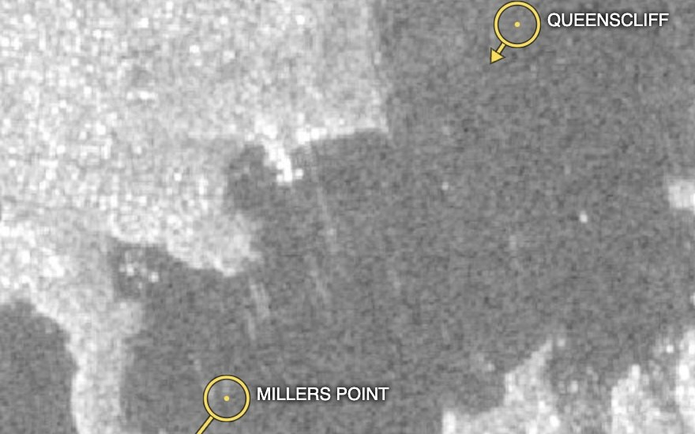

Two answers at once — who is where (AIS) and what is actually on the water (SAR). The mismatches are the story: a strong radar return with no AIS is a candidate dark ship.
AIS transponders broadcast a vessel's name, position and heading — but only for ships that carry and enable them. SAR sees every vessel's radar return regardless of weather, darkness or cloud, but cannot read names. SkySpera fuses the two: live AIS tracks over enhanced Sentinel-1 SAR. Cooperative vessels line up with their radar signature; a strong SAR return with no AIS nearby is a candidate dark ship (illegal fishing, sanctions evasion, smuggling), while an AIS report with no radar return can flag spoofing. All-weather, on the Sentinel-1 cadence, at national or basin scale.

Tell us the ground you need to watch — we'll show you what SkySpera can do with it.
Talk to us